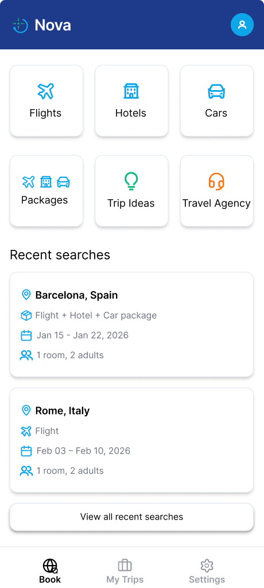
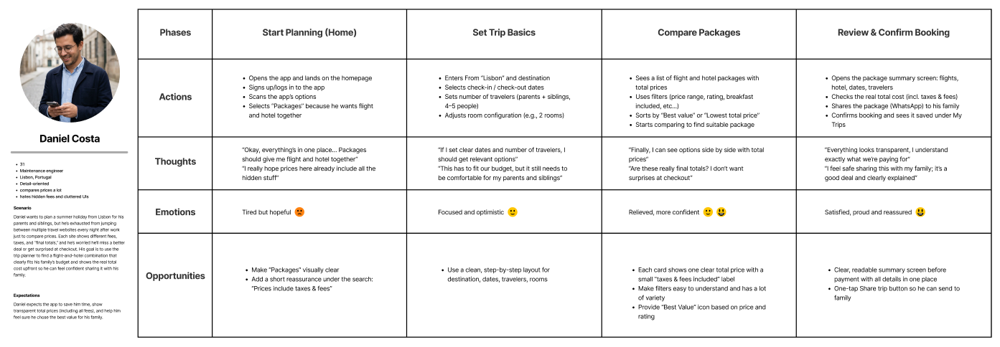
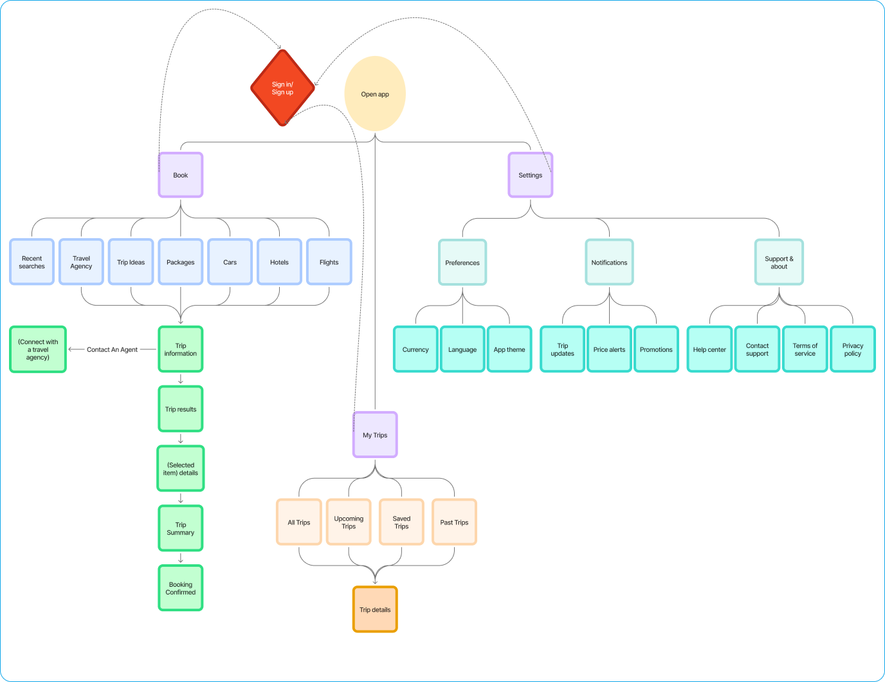
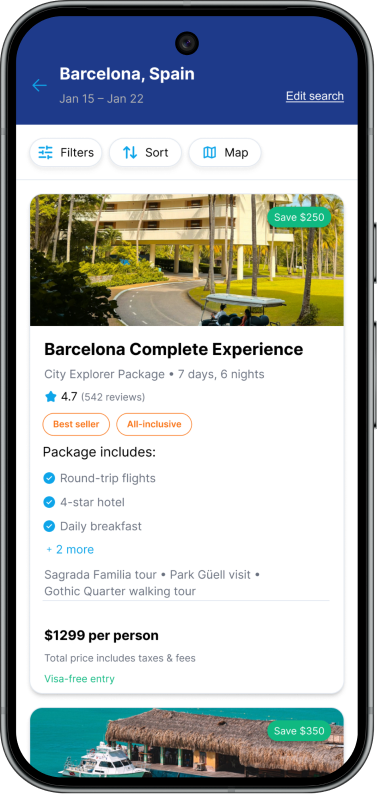
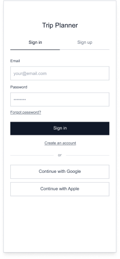
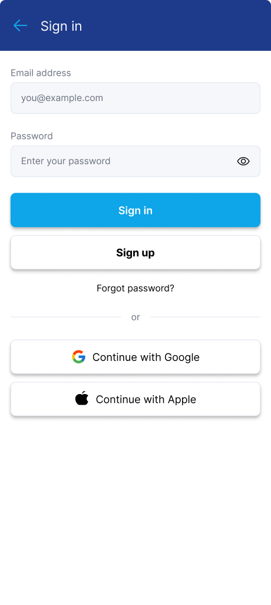
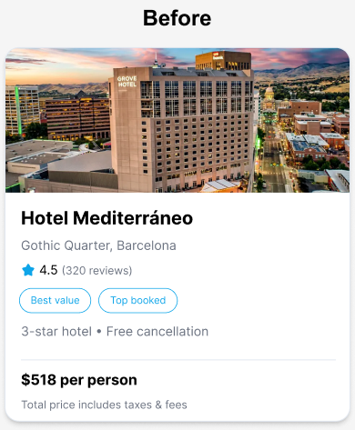
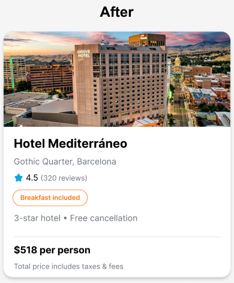

Scattered planning
Research revealed how often people jump between services to plan a single trip.
For this UX project, I designed a mobile experience to help travelers compare options, understand costs, and manage trips in one place.

Travelers piece together flights, hotels, reviews, itineraries and bookings across different platforms. Every switch adds friction and makes decisions harder.
I wanted to make the key steps easier to understand: search, compare, book, and find the details later.
Research revealed how often people jump between services to plan a single trip.
Comparing offers becomes difficult when taxes, fees, and included services are hard to find.
Travelers want their upcoming trips, booking details, and important information together.
The original research also highlighted offline access and easier trip sharing. These remained design opportunities, not verified live features of the concept.
I used the Double Diamond process to understand the problem, define what matters, develop solutions and test the design.
Competitor analysis, 3 interviews and 50+ survey responses.
Affinity mapping, personas, card sorting and a sitemap.
Wireframes, user flows, first-click and preference tests.
Final interface design and moderated usability testing.
I compared booking, price comparison and planning experiences to understand what worked and where Nova could be simpler.


Information architecture validation: A tree test with 10 participants recorded 87.5% overall success and 66.25% direct success. “Trip Ideas” was a point of confusion. Because the tree test required a Book-navigation step that would not normally appear on launch, I treated the findings as directional rather than a definitive validation of the final navigation.
Research pointed to three practical needs: compare costs, find reliable information, and manage everything in one place.
I used those needs to decide what belonged on the home screen, result cards, and My Trips.
Selected findings from the original Nova survey. These describe the research participants, not all travelers.
Travelers compare offers across multiple services.
DESIGN RESPONSEA shared Book hub for flight, hotel, car and package discovery.
Included services and final costs are difficult to compare.
DESIGN RESPONSECards emphasize package inclusions, ratings and price context.
Post-booking details are scattered.
DESIGN RESPONSEMy Trips keeps current, saved and past plans accessible.
Compares options carefully and wants clear, complete prices before booking.
Organizes short trips with friends and wants to move from idea to plan quickly.
Plans around family needs and values trustworthy, culturally suitable options.
Personas represent research-based planning needs. Portraits are illustrative, not test participants.
I translated the research into a Book hub, more informative result cards, and a place to revisit trip details.
The Book screen groups essential travel categories, so people can start their search without switching services.

Result cards place included services, ratings and price information together, making options easier to compare.
My Trips organizes upcoming, saved and past bookings without making travelers start a new search.


Nova is a UX/UI concept project, not a live booking service.
I tested the interactive prototype with five people using realistic booking and trip-management tasks. Four sessions took place remotely and one was in person.
Task success, completion time, and a 1–7 Single Ease Question (SEQ) rating helped separate task completion from the effort it took.
| TEST SCENARIO | TASK SUCCESS | AVG. TIME | AVG. EASE / 7 |
|---|---|---|---|
| Find a hotel with breakfastBarcelona, family trip | 100% | 2m 26s | 5.4 |
| Choose a travel packageFlight + hotel, halal-food need | 100% | 3m 35s | 5.0 |
| Check a booked trip's priceFind Barcelona in My Trips | 100% | 16s | 6.6 |
Results from the Nova moderated usability testing report, January 27–February 4, 2026. Small exploratory sample (n=5); these findings informed design iteration, not claims of broad product performance.
Participants completed the hotel task, but several spent too long locating the breakfast-included option.
Key amenities were easy to overlook while scanning hotel results.
The breakfast label received a more prominent pill treatment and stronger visual emphasis.


Some participants hesitated at the Packages entry point. I updated the icon to communicate the combined flight, hotel, and car offering more clearly.
Participants located their Barcelona booking and checked the price in an average of 16 seconds, with an average 6.6/7 ease rating.
In a separate first-click test, most participants selected the hotel card to proceed. The recorded average was 47 seconds, with 4.2/5 average confidence. This supported keeping the card's primary action clear.
In the trip-summary preference test, participants chose the more detailed Version A over the shorter Version B. I kept Version A because it made key booking information clearer to this small test group.
Nova started as a solo course assignment and became an end-to-end research, design, and validation exercise. All five test participants could finish the tasks, yet some still struggled to spot essential information. Testing showed where hierarchy and recognition mattered more than adding another feature.
Nova connected user research, competitive analysis, synthesis, information architecture, interaction design, and usability findings. A next iteration would validate the “Trip Ideas” label more thoroughly and explore offline information and trip sharing before claiming those features are solved.